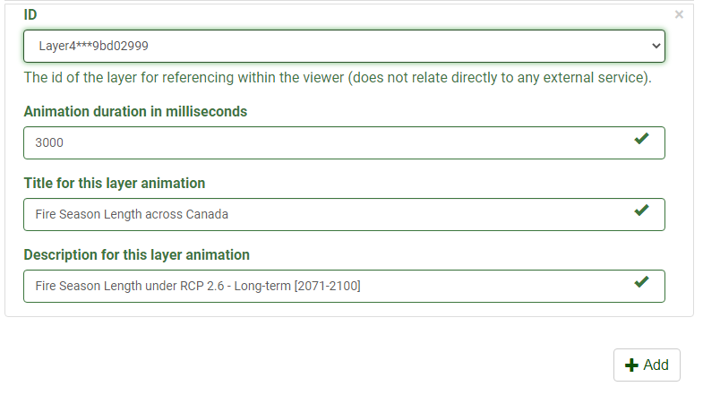

Configure the Thematic Slider Plugin
The plugin works with the following mapping services:
- ESRI Feature
- ESRI Dynamic
- OGC WMS
More information on Web map services can be found here.
Definition of Parameters
To configure this plugin to work with a mapping web service the following parameters are required.
| Parameters | Description | |
|---|---|---|
| General | Open | This plugin can be set to open automatically when a map loads. By default it is set open on map load |
| Auto run | Determines if the plugin will start the animation automatically | |
| Loop | Determines if the plugin will restart the animation automatically when it reaches the end of the array | |
| Description | Determines if the description control is available | |
| Slider | Determines if the slider controls are available. Note: Description needs to be true for the slider to be enabled | |
| Stack | Determines if only the active layer is shown or if the visibility of all the layers are stacked. Layers are stacked from -Layer 0 to the active layer | |
| Layers | Id | Determines the layer id as defined in the layer section. |
| Field | layer id as define in layer section | |
| Duration | duration in millisecond to stay on the active layer | |
| Title | Title to show in description control | |
| Description | Text to show inside description control |
Step-By-Step Guide
Step 1. Ensure that the Thematic Slider Plugin is enabled.

Step 2. Select the options you want the Thematic Slider to do:
- Start animation on load
- Play the animation on loop
- Stack layer visibility
Note
By default, the following will be enabled:
- Open by default
- Enable description control
- Enable slider control
Step 3. Under Layers, select the layer which the plugin will be enabled on. Set the Animation duration, Title for layer animation, and Description for layer animation

Step 4. Optional, Click on the Add Button to create new entries for additional layers.

